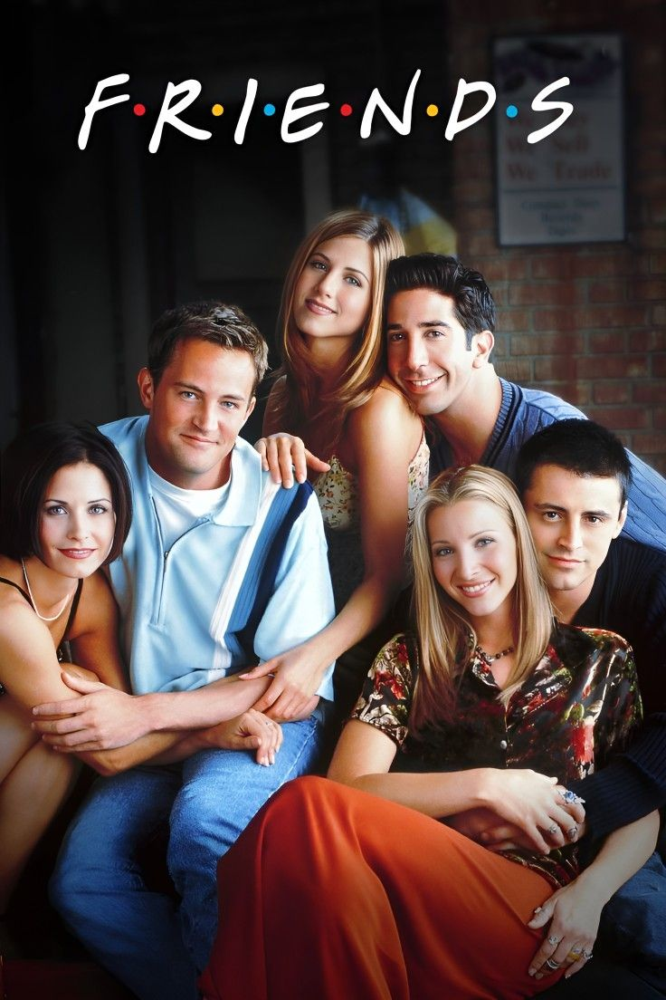
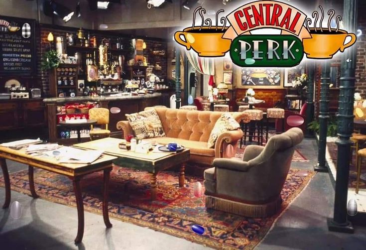
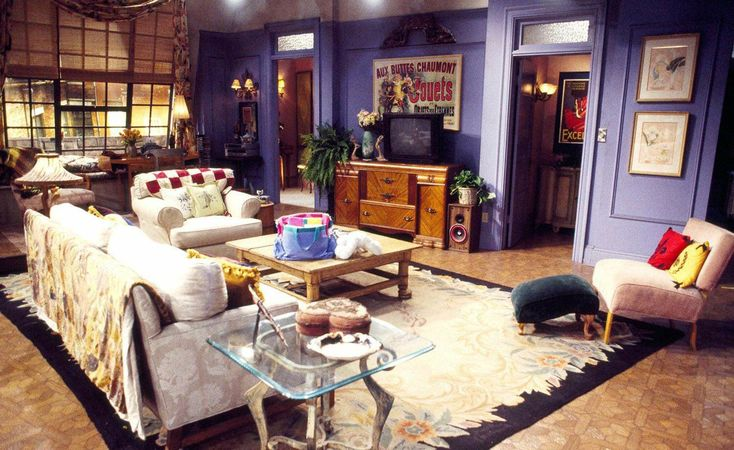
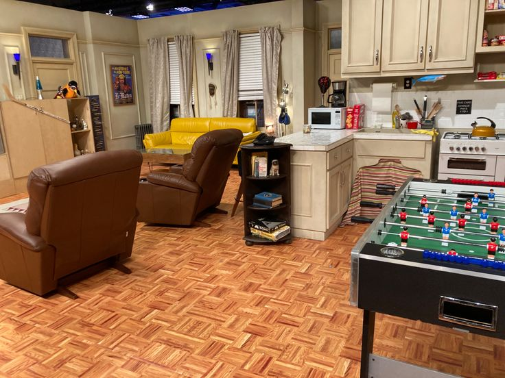

Friends é uma sitcom americana criada por David Crane e Marta Kauffman, exibida pela NBC entre 1994 e 2004. Ao longo de 10 temporadas e 236 episódios, a série acompanha seis amigos vivendo, trabalhando e se relacionando em Nova York. Com humor, romance e momentos inesquecíveis, Friends se tornou uma das séries mais assistidas e amadas da história da televisão.
Ano de lançamento: 1994
Término: 2004
Temporadas: 10
Episódios: 236
Criadores: David Crane e Marta Kauffman
Emissora: NBC


Central Perk

Apartamento da Monica

Apartamento do Joey e Chandler